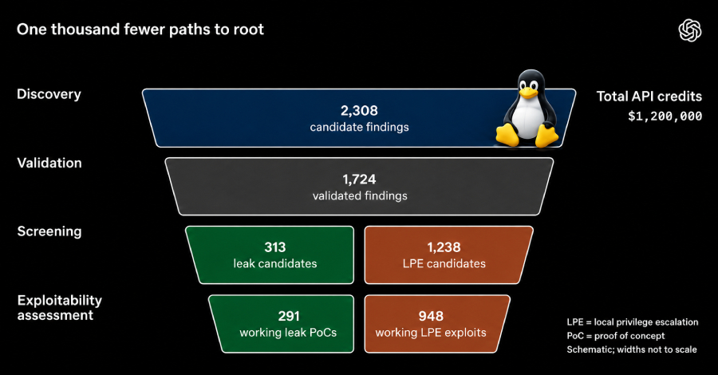

OpenAI otonom güvenlik ajanlarıyla Linux çekirdeğinde 30 saatte 948 root açığı bularak $1.2M API yaktı. Fakat açıkları bulup masaya bırakmak güvenlik inovasyonu değil; trilyon dolarlık sunucuları koruyan 3-5 gönüllü mühendisin sırtına yıkılmış kurumsal bir DoS saldırısıdır.

OpenAI kapalı kapılar ardında eğittiği yeni siber güvenlik modeline 1.2 milyon dolarlık GPU kümesini bağlayıp Linux çekirdeğine 30 saatte tam 948 tane çalışan yerel yetki yükseltme (LPE - root) açığı yağdırdı. Resmi raporun başlığı da hayli gösterişli: 'A thousand fewer paths to root'.
Milyar dolarlık bir yapay zeka tekeli, sınırsız sunucu bütçesiyle çekirdeği exploit yağmuruna tutup 'bakın ne kadar güçlüyüz' diyerek PR şovunu yaptı. Ancak faturanın arka yüzünü kimse konuşmuyor. O 948 tane kritik açığı tek tek inceleyip, kernel'a patch hazırlayıp, trilyon dolarlık küresel bulut çökmesin diye test etmek zorunda kalan kim?
Hafta sonu kahve eşliğinde tüm dünyanın AWS, Azure, bankacılık ve devlet sunucularını ayakta tutan 3-5 tane gönüllü Linux çekirdek geliştiricisi.
Yapay zeka modelleri dakikada yüzlerce exploit senaryosu fırlatabilir; fakat çekirdekte tek bir halüsinasyon trilyon dolarlık altyapıları dakikasında yere serer. Çekirdek yamalamak 'AI kodu generate ettim, merge edin' diyerek yapılamaz. Saf insan aklı, derin C tecrübesi ve sıfır hata toleransı gerektirir.
Yamalama sorumluluğunu almadan açıkları raporlayıp açık kaynağın sırtına yıkmak bir siber güvenlik devrimi değil; açık kaynak ekosistemine yapılmış 1.2 milyon dolarlık kurumsal bir DoS saldırısıdır.